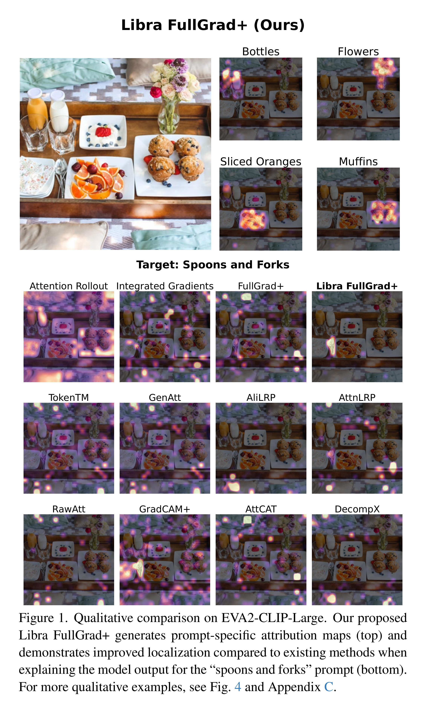
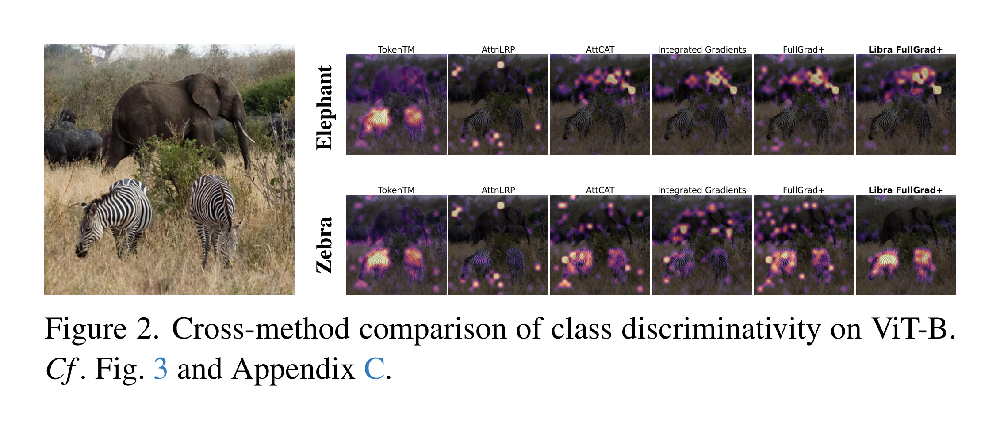

LibraGrad: Balancing Gradient Flow for Universally Better Vision Transformer Attributions
Table of Contents
To understand model decisions, attribution methods measure how input features contribute to outputs. LibraGrad enhances all gradient-based attribution methods for Transformers through theoretically-motivated gradient flow balancing, leading to fast and faithful post-hoc explanations. For theoretical foundations and comprehensive quantitative and qualitative evaluations, see our paper.
 
1. Abstract
Why do gradient-based explanations struggle with Transformers, and how can we improve them? We identify gradient flow imbalances in Transformers that violate FullGrad-completeness, a critical property for attribution faithfulness that CNNs naturally possess. To address this issue, we introduce LibraGrad—a theoretically grounded post-hoc approach that corrects gradient imbalances through pruning and scaling of backward paths, without changing the forward pass or adding computational overhead. We evaluate LibraGrad using three metric families: Faithfulness, which quantifies prediction changes under perturbations of the most and least relevant features; Completeness Error, which measures attribution conservation relative to model outputs; and Segmentation AP, which assesses alignment with human perception. Extensive experiments across 8 architectures, 4 model sizes, and 4 datasets show that LibraGrad universally enhances gradient-based methods, outperforming existing white-box methods—including Transformer-specific approaches—across all metrics. We demonstrate superior qualitative results through two complementary evaluations: precise text-prompted region highlighting on CLIP models and accurate class discrimination between co-occurring animals on ImageNet-finetuned models—two settings on which existing methods often struggle. LibraGrad is effective even on the attention-free MLP-Mixer architecture, indicating potential for extension to other modern architectures.
2. Code
The code of this paper is distributed across three repositories:
2.1. Notebooks
We offer two interactive notebooks:
- Implementing LibraGrad From Scratch for Llama 3
- This comprehensive, self-contained notebook serves as the primary reference implementation for LibraGrad
- Ideal for practitioners who have studied the theoretical foundations in the paper
- Enables visualization of attribution maps for next token prediction tasks on textual data
- CLIP Feature Attribution via LibraGrad
- Enables visualization of attribution maps for any combination of images and text prompts
- Features automatic setup that handles all repository installations and dependencies
3. Support
Found LibraGrad helpful? Star our repository (github.com/NightMachinery/LibraGrad) and cite our LibraGrad and FullGrad+ papers:
@misc{mehri2024libragrad, title={{LibraGrad}: Balancing Gradient Flow for Universally Better Vision Transformer Attributions}, author={Faridoun Mehri and Mahdieh Soleymani Baghshah and Mohammad Taher Pilehvar}, year={2024}, eprint={2411.16760}, archivePrefix={arXiv}, primaryClass={cs.CV}, url={https://arxiv.org/abs/2411.16760}, } @article{skipplus-cvprw24, title = {{SkipPLUS}: Skip the First Few Layers to Better Explain Vision Transformers}, author = {Faridoun Mehri and Mohsen Fayyaz and Mahdieh Soleymani Baghshah and Mohammad Taher Pilehvar}, journal = {2024 IEEE/CVF Conference on Computer Vision and Pattern Recognition Workshops (CVPRW)}, year = {2024}, pages = {204-215}, url = {https://api.semanticscholar.org/CorpusID:272915235} }